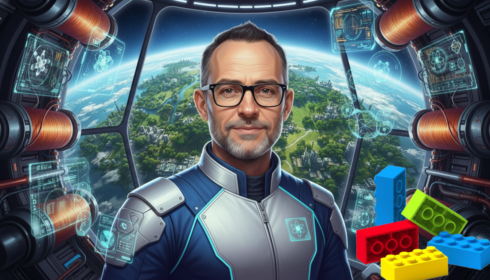
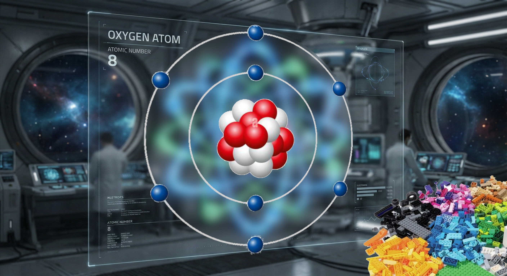
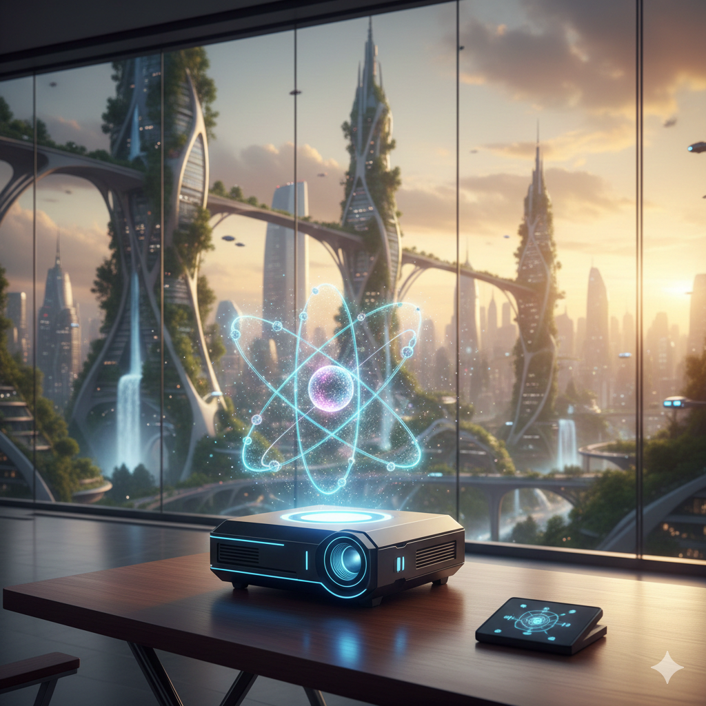
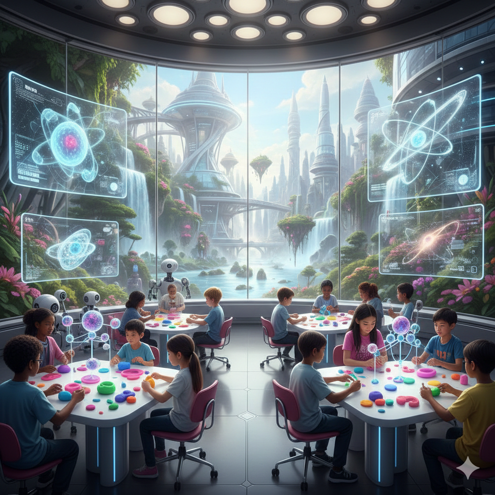
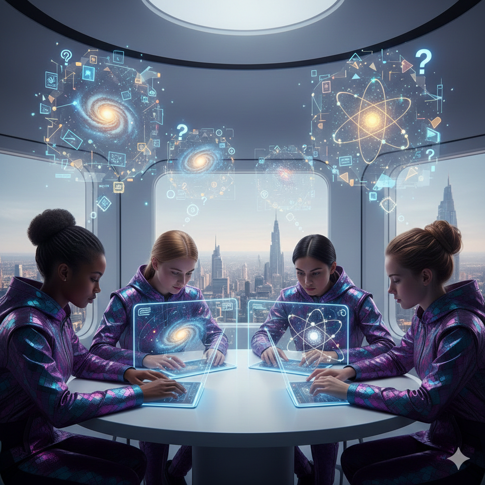
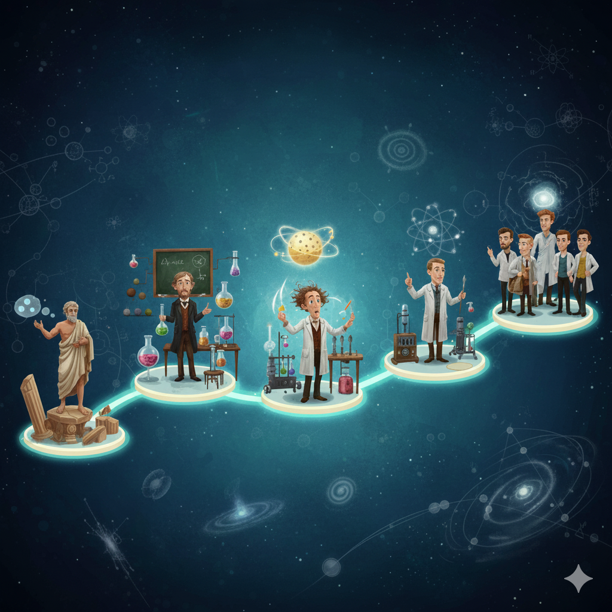

Ciao Scienziati in missione!
Oggi parliamo del segreto più piccolo e potente di tutto l'universo. È così piccolo che non possiamo vederlo, ma è come un supereroe invisibile che tiene in piedi tutto ciò che ci circonda! Stiamo per parlare dell'ATOMO.
Immaginate di dover costruire un castello LEGO gigantesco. Da cosa cominciate? Dai mattoncini, vero? Ecco, l'atomo è il mattoncino più piccolo che esista per costruire... beh, TUTTO! La vostra matita, l'aria che respirate, il vostro gelato preferito e persino voi stessi! Siete fatti di miliardi di miliardi di questi mattoncini invisibili.

Com'è Fatto un Atomo? Una Piccola Famiglia
Anche se è piccolissimo, dentro l'atomo c'è un mondo! Immaginatelo come una palla da basket gigante (questa è l'intera famiglia-atomo).
Il Nucleo: Il Cuore della Casa
Al centro della palla da basket c'è un pallino piccolissimo, come una capocchia di spillo. Questo è il nucleo. È il capofamiglia dell'atomo. È pesante, sta sempre al centro e non si muove quasi mai. È come il papà o la mamma seduti sul divano, che tengono d'occhio tutto.
I Protoni: I Genitori con il "Cartellino del Nome"
Dentro il nucleo ci sono i PROTONI. I protoni sono importantissimi perché decidono che tipo di atomo è. Sono come il cognome della famiglia. Se una famiglia ha il cognome "Ossigeno", tutti sanno che è la famiglia dell'aria. Se ha il cognome "Carbonio", è la famiglia del legno della vostra matita. Il numero di protoni ci dice il cognome dell'atomo.
Gli Elettroni: I Bambini Scatenati che Giocano in Giardino
Intorno al nucleo, lontano lontano, ci sono degli ELETTRONI. Sono leggerissimi e si muovono velocissimi, come dei bambini pieni di energia che corrono intorno alla casa! Il loro giardino è enorme rispetto al pisellino-nucleo. Hanno un compito importante: quando gli atomi si avvicinano, sono gli elettroni che si "danno la mano" per creare i legami, come quando voi tenete per mano un amico per formare un cerchio.
I Neutroni: I Genitori "Super" che aiutano a tenere unita la famiglia
Nel nucleo, insieme ai protoni, ci sono i NEUTRONI. Il loro nome significa "neutrale", cioè non prendono le parti di nessuno. Immaginate che i protoni (che hanno tutti carica positiva) si respingano come quando provate ad avvicinare due calamite dallo stesso polo. I neutroni sono come gli abbracci che mettono pace e tengono unito il nucleo, evitando che i protoni si allontanino.

Le Super-Potenze degli Atomi
Ogni famiglia-atomo ha il suo carattere e i suoi superpoteri!
Superpotere 1: Essere Leggeri o Pesanti
Alcune famiglie-atomo sono piccole e leggere, come la famiglia "Idrogeno" (che è la più piccola di tutte!). Altre sono grandissime e pesanti, como la famiglia "Uranio". È la differenza che c'è tra una piuma e un dizionario! Il peso dipende da quanti "componenti della famiglia" (protoni e neutroni) ci sono nel nucleo.
Superpotere 2: Attrarsi o Respingersi
Ricordate gli elettroni, i bambini scatenati? Hanno una carica elettrica negativa. I protoni nel nucleo hanno una carica positiva.
Metafora delle Calamite: È come avere delle calamite! Due protoni (++), come due poli uguali di una calamita, si respingono. Un protone (+) e un elettrone (-), come i poli opposti, si attraggono. È per questo che gli elettroni non scappano via: sono "attratti" dal nucleo!
Superpotere 3: Unirsi per Formare le Molecole
Un atomo da solo è come un bambino da solo al parco. Ma quando incontra altri atomi, magari di un'altra famiglia, possono unirsi! Gli elettroni si "danno la mano" e formano dei gruppi fortissimi chiamati MOLECOLE.
Metafora delle Costruzioni LEGO:
- L'atomo di Ossigeno (O) è un mattoncino rosso.
- L'atomo di Idrogeno (H) è un mattoncino bianco.
- Se prendi 1 mattoncino rosso (O) e 2 mattoncini bianchi (H) e li attacchi, cosa ottieni? H₂O... che è una MOLECOLA D'ACQUA! È così che si forma una goccia di pioggia!
Gli atomi! Un video che spiega tutto in 4 minuti!
Ma quanti atomi ci sono?
La tavola periodica è la lista delle "famiglie" di atomi, ci mostra 118 mattoncini diversi (gli elementi). Con questi 118 mattoncini, mescolandoli in modi diversi, si può costruire tutto ciò che esiste nel mondo, dalle nuvole alle stelle, dalla tua matita al tuo corpo!
La tavola periodica è come un'album di figurine di tutti gli elementi che esistono nell'universo, dall'ossigeno che respiriamo all'oro dei gioielli. Ogni elemento ha una sua casellina con un simbolo e un numero che ci racconta com'è fatto. Mettendoli in ordine, ci mostra come sono "imparentati" tra loro!.
Clicca qui per vedere tutti gli elementi con giochi e curiosità!

Attività Pratica: Costruiamo un Atomo con il Pongo!
Materiale: Pongo di tre colori diversi (es. rosso, blu, verde) e un cartoncino.
- Scegli il tuo "Cognome-Atomo": Oggi costruiremo un atomo di Ossigeno, che ha 8 protoni.
- Crea il Nucleo: Prendi il pongo rosso e blu. Crea 8 palline rosse (i protoni) e 8 palline blu (i neutroni). Impastale tutte insieme per formare un unico nucleo pesante. Attaccalo al centro del cartoncino.
- Aggiungi gli Elettroni: Prendi il pongo verde. Crea 8 palline verdi più piccole (gli elettroni). Attaccale sul cartoncino formando un grande cerchio (un "anello") intorno al nucleo.
Ecco fatto! Avete appena creato il vostro atomo di Ossigeno!

Quiz: Sei un Esperto di Atomi? (Domanda 1)
1. L'atomo è come...
Quiz: Sei un Esperto di Atomi? (Domanda 2)
2. Chi è il "capofamiglia" che sta sempre al centro dell'atomo?
Quiz: Sei un Esperto di Atomi? (Domanda 3)
3. I protoni sono importanti perché...
Quiz: Sei un Esperto di Atomi? (Domanda 4)
4. Cosa fanno gli elettroni quando gli atomi si uniscono?
Quiz: Sei un Esperto di Atomi? (Domanda 5)
5. Se unisco un mattoncino rosso (Ossigeno) e due bianchi (Idrogeno), cosa ottengo?
Quiz: Sei un Esperto di Atomi? (Domanda 6)
6. I neutroni servono a...
Risposte Corrette:
- b) Il mattoncino LEGO più piccolo di tutto.
- b) Il nucleo.
- b) Decidono il "cognome" della famiglia-atomo.
- c) Si "danno la mano" per formare le molecole.
- b) Acqua (H₂O).
- b) Tenere unito il nucleo, come degli abbracci.

La Macchina del Tempo: La Storia dell'Atomo
La scoperta dell'atomo è stata una lunga e fantastica caccia al tesoro, fatta di colpi di scena e menti geniali. Ecco le tappe principali!
L'Intuizione: Democrito (circa 400 a.C.)
Antica Grecia
Chi era: Un filosofo greco, un po' come un antico detective del pensiero.
La sua idea: Immaginò che tutto fosse fatto di piccolissime particelle INDIVISIBILI, che chiamò "àtomos". Non aveva prove, ma solo una grandissima intuizione! Fu il primo passo.
Il Padre della Teoria Moderna: John Dalton (1803)
Inghilterra, 1803
Chi era: Un insegnante inglese che amava fare esperimenti.
La sua scoperta: Con esperimenti chimici, capì che gli atomi esistono davvero e che elementi diversi hanno atomi diversi. Fu lui a dire: "Tutto è fatto di atomi, sono loro i veri protagonisti!". Fu il secondo passo, più sicuro.
La Sorpresa: J.J. Thomson (1897)
Inghilterra, 1897
Chi era: Uno scienziato curioso che studiava l'elettricità.
La sua scoperta: Scoprì che dentro l'atomo c'erano delle particelle ancora più piccole e con carica negativa: gli ELETTRONI! Questo voleva dire che l'atomo NON era indivisibile, ma aveva delle parti. La sua scoperta fu un terzo passo che cambiò tutto. Immaginò l'atomo come un "panettone" con gli elettroni come uvette sparse dentro.
Il Nucleo al Centro: Ernest Rutherford (1911)
Nuova Zelanda/Inghilterra, 1911
Chi era: Uno scienziato con un esperimento geniale.
La sua scoperta: Sparò delle particelline microscopiche contro una lamina d'oro. Si aspettava che le attraversassero tutte, como un proiettile che attraversa una nuvola. Invece, alcune rimbalzarono! Urlò: "È como se avessi sparato un cannone contro un fazzoletto e il proiettile mi fosse tornato indietro!". Capì che doveva esserci un NUCLEO piccolo, denso e positivo al centro. Fu una scoperta rivoluzionaria!
Il Sistema Solare in Miniatura: Niels Bohr (1913)
Danimarca, 1913
Chi era: Un geniale scienziato danese che lavorò con Rutherford.
La sua idea: Disse: "Il modello di Rutherford non è stabile!". Propose che gli elettroni non girassero ovunque, ma su orbite precise, come i pianeti intorno al Sole. Questo modello, semplice e chiaro, è quello che usiamo ancora oggi per spiegarvi le basi. Fu un passo per rendere tutto più chiaro.
Il Mondo Strambo: La Meccanica Quantistica (anni 20)
Europa, anni '20
Chi erano: Un gruppo di scienziati giovani e coraggiosi come Heisenberg e Schrödinger.
La loro scoperta: Andarono ancora più in profondità e scoprirono che nel mondo piccolissimo degli atomi le regole sono... strane! Gli elettroni non sono palline, ma si comportano un po' come onde e un po' come particelle. Non stanno in un punto preciso, ma sono "smaterializzati" in una nuvola di probabilità. È come se il bambino scatenato non fosse più un bambino, ma un'ombra magica che può essere in mille punti del giardino allo stesso momento! Fu l'apertura verso un mondo nuovo e fantastico, che ancora oggi studiamo.
Questa lunga avventura ci insegna che la scienza è fatta di tante persone che, un pezzetto alla volta, costruiscono insieme il castello della conoscenza. E chissà quali scoperte farete VOI in futuro!